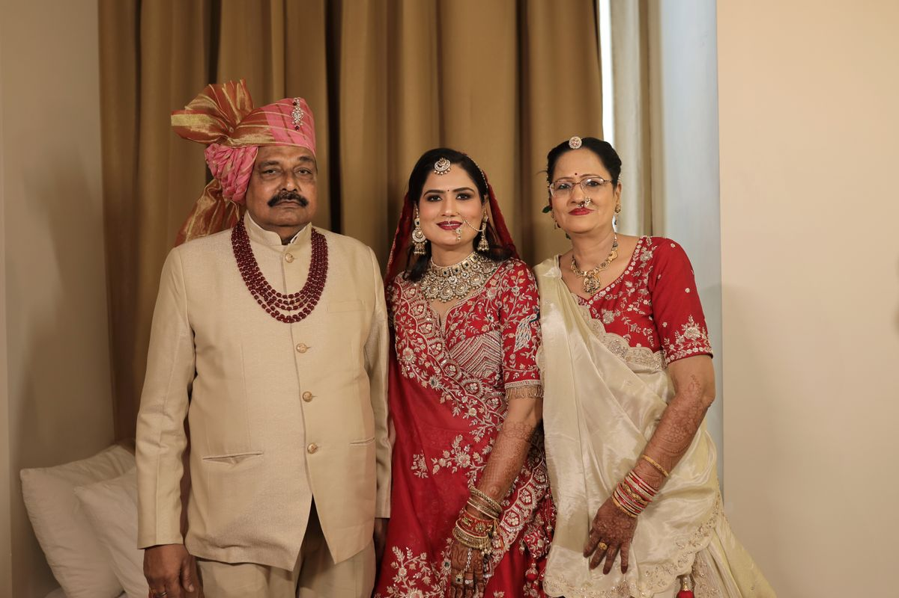
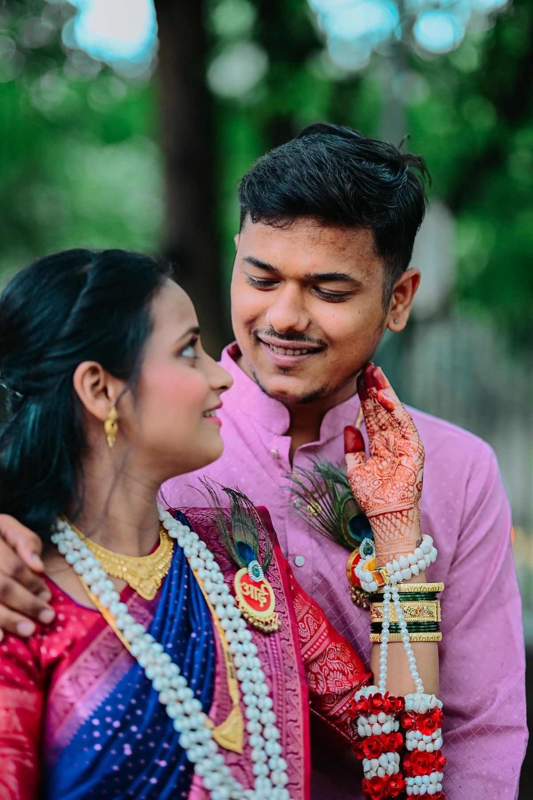
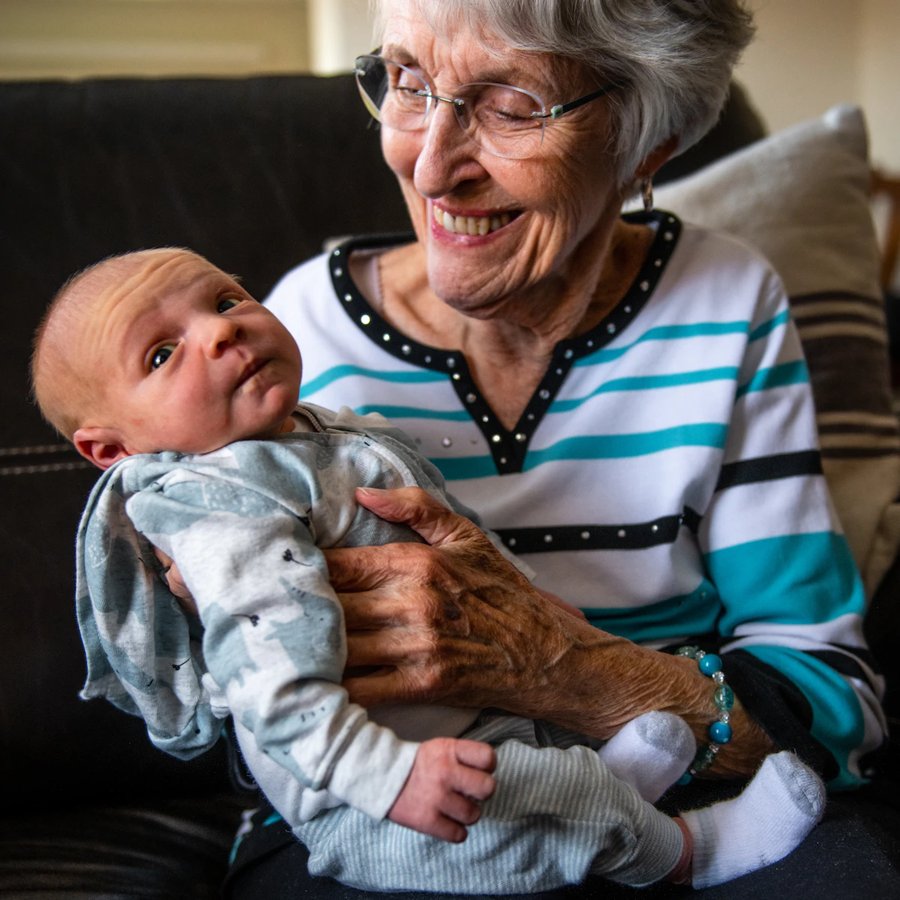

A little life, loved by many
Three years of being your home.
From the families who raised them, to their wedding, the waiting days, tiny words, wobbly steps and every little year.
For Mira, with all our love.Our first three years together



Maa · a daughter first
The hands that held her first.
Before Mira, she was someone's daughter—still finding home in her parents' arms.
Papa · loved long before Mira
He was someone's little boy, too.
The people who taught him to love are still in every story he tells.
Their beginning · wedding day
Two families, one beautiful beginning.
Before there was a family story, there was the day their two stories became one.
Turn over a photograph to read the memory, or play their wedding film.
The waiting days
We loved you before we met you.
Little plans, quiet hopes, and a place already saved for you in every heart.
The very first day
And then, you were here.
One small face. A room full of people learning a brand-new kind of love.
Chapter one · 0 to 12 months
Your first year, all heart.
First smiles, first steps, first words, and a first birthday that brought everyone close.
Turn over a photograph to read its memory, or play a little family video.
Chapter two · 12 to 24 months
A little more of everything.
New words, big opinions, favorite games, and the first little rides around the garden.
Turn over a photograph to read its memory, or play a little family video.
Chapter three · 24 to 36 months
Look at you, little explorer.
More questions, more color, and a little backpack ready for the next big adventure.
Turn over a photograph to read its memory, or play a little family video.

A note to keepA note from Nani
“Keep asking your little questions, Mira. Our whole family will always make room for your wonder.”
Sample written note · No voice recording included
A family story can hold notes, photos and real recordings when its family adds them.
For every family, every first
Every little life deserves a story of its own.
This sample shows one way to keep the moments that make a family yours.
Back to Family Moments